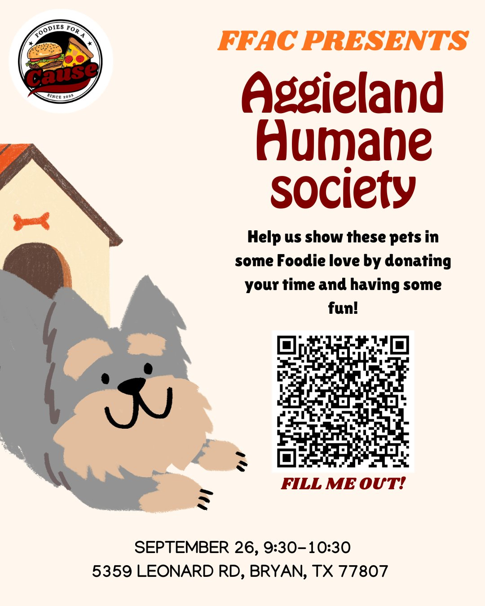

Volunteering
Aggieland Humane Society
- When
- Saturday, September 26, 9:30–10:30 AM
- Where
- 5359 Leonard Rd, Bryan, TX 77807
Help us show the pets some Foodie love by donating your time. Sign up with the QR code on the flyer.
Tap the flyer to open it full size and scan the sign-up QR code.